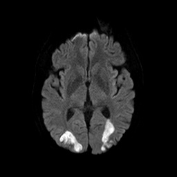

Acquired loss of saccadic and pursuit eye movements in horizontal and vertical directions with spared vestibulo-ocular reflex
Common acute cause: hypoxic-ischemic encephalopathy (HIE)
Common chronic cause: progressive supranuclear palsy (PSP)
Uncommon causes: Whipple disease, thalamic and midbrain infarct/hemorrhage/tumor, Creutzfeldt-Jakob disease, ataxia telangiectasia, Wilson disease, Niemann-Pick disease type C
Reduced or absent saccades and pursuit in all planes
Doll’s eye maneuver produces full amplitude of horizontal and vertical eye movements (intact vestibulo-ocular reflex)
Possible accompanying clinical features
Impaired visuospatial function (in Balint-Holmes syndrome)
Ataxia and sinopulmonary infections (in ataxia telangiectasia)
Axial rigidity and blepharitis (in PSP)
Impaired cognition, pendular convergence nystagmus and rhythmic twitching of muscles of mastication (“oculomasticatory myorhythmia”) and diarrhea (in Whipple disease)
Visceromegaly (in Niemann–Pick type C)
Imaging features

In acute cases, brain MRI may show bilateral parieto-occipital infarction
In chronic cases, brain MRI may show atrophy of the midbrain (“hummingbird sign”) in progressive supranuclear palsy, or superior cerebellar vermis atrophy in ataxia telangiectasia
Small bowel biopsy may show periodic acid Schiff positivity in macrophages or PCR positivity for Tropheryma whippelii DNA in spinal fluid in Whipple disease
Bone marrow may show sea-blue histiocytes and foam cells in Niemann-Pick type C
Perform the Doll’s eye maneuver to establish that the vestibulo-ocular reflex is intact, which would qualify this condition as a “supranuclear gaze disorder”
Recognize that many conditions may cause these eye movement abnormalities
Look for distinctive accompanying features that link these abnormalities to a particular underlying neurologic disorder